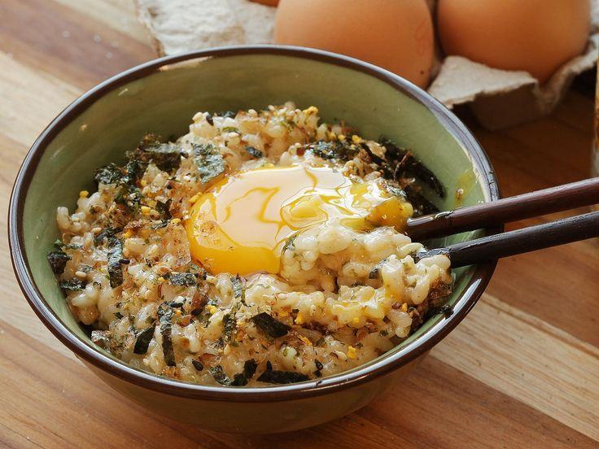

Receita de Tamago Kake Gohan

Traduzido como "arroz coberto com ovo cru", essa receita representa à autêntica "fast food japonesa"
Essa receita pode servir até 4 pessoas.
Ingredientes
- 600g de arroz cozido e quente
- 4 ovos frescos
- Molho de soja, quantidade à gosto
Modo de Preparo
- Separe quatro tigelas e as encha com oo arroz recém-cozido bem quente
- Quebre um ovo cru por cima de cada uma das tigelas com o arroz.
- Adicione o molho de soja, mexa bem e consuma.
- Recheie da maneira que preferir.
OBS: Se você quiser, você pode adicionar coberturas a esse prato como: tomate, carne seca, peixe e etc.